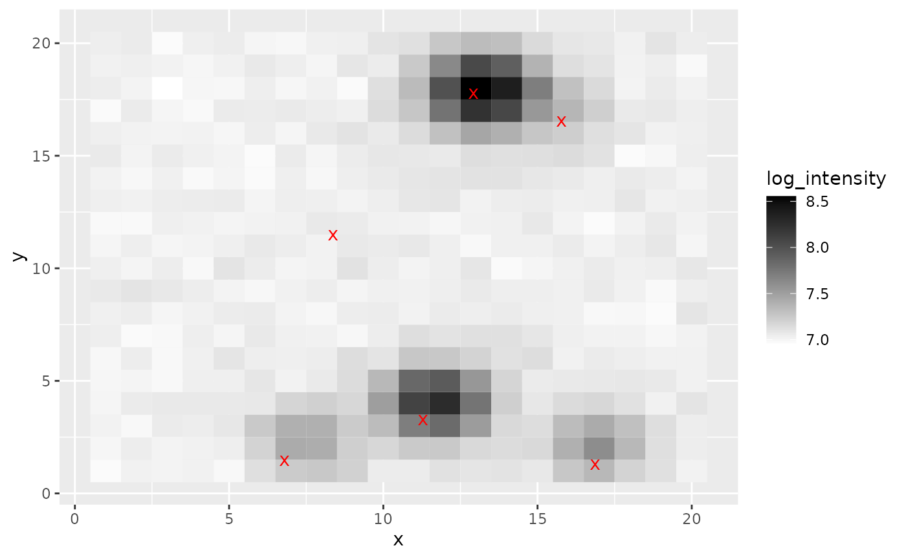
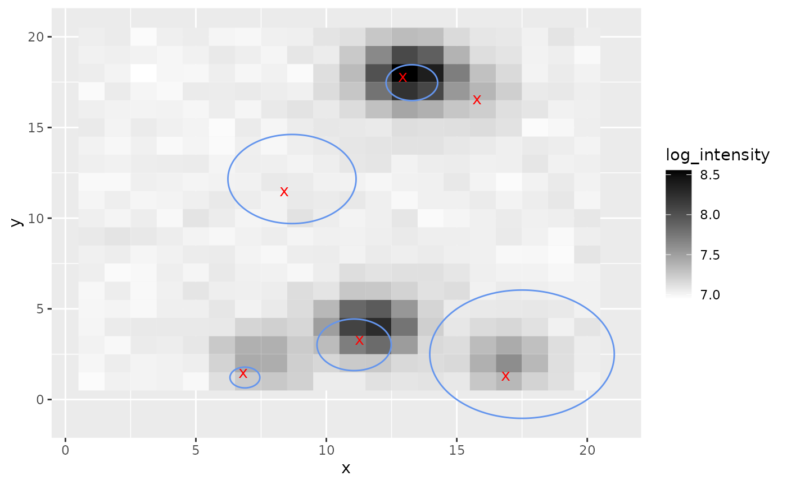

BLiP for point source detection
2022-04-05
blipr-pointsource.RmdThis vignette illustrates how to use blipr to perform resolution-adaptive point source detection.
Problem setting
Suppose we observe photon counts from a telescope, and we are interested in detecting point-sources (e.g., stars) from the image. Since most images have some blur, we may not be able to perfectly localize each point-source, but BLiP can still help localize them as precisely as possible. Below, we give an example of how to apply BLiP on top of outputs from a pretrained StarNet model. Note that the StarNet model is described in detail in Liu et. al (2021).
To start, we load simulated \(20x20\) image data, which was generated using code from Liu et. al (2021).
library(tidyverse)
#> ── Attaching packages ─────────────────────────────────────── tidyverse 1.3.1 ──
#> ✓ ggplot2 3.3.4 ✓ purrr 0.3.4
#> ✓ tibble 3.1.2 ✓ dplyr 1.0.7
#> ✓ tidyr 1.1.3 ✓ stringr 1.4.0
#> ✓ readr 1.4.0 ✓ forcats 0.5.1
#> ── Conflicts ────────────────────────────────────────── tidyverse_conflicts() ──
#> x dplyr::filter() masks stats::filter()
#> x dplyr::lag() masks stats::lag()
library(ggplot2)
library(blipr)
# Load simulated image data
npixels = 20
image <- blipr::starnet_sim_data$image
true_locs <- blipr::starnet_sim_data$true_locs
# plot
plot_starnet_sim <- function() {
raw_df <- data.frame(
y=rep(1:npixels, each=npixels),
x=rep(1:npixels, npixels),
log_intensity=log(as.numeric(t(image[2,,])))
)
loc_df <- data.frame(
y=npixels*true_locs[,1],
x=npixels*true_locs[,2]
)
g <- ggplot() +
geom_tile(
data=raw_df,
mapping=aes(x=x, y=y, fill=log_intensity)
) +
scale_fill_gradient(low="white", high="black") +
geom_point(
data=loc_df, mapping=aes(x=x, y=y),
color='red', shape='x', size=3.5
)
return(g)
}
print(plot_starnet_sim())
Applying BLiP
Next, we load the posterior samples from the pretrained StarNet model. See here or here for examples of how to fit pretrained StarNet models.
Note that the posterior samples are an \((N, n_{\mathrm{source}}, d)\)-shaped array, where \(N\) is the number of posterior samples and \(d=2\) is the dimension of the image. If post_samples[i, j] = (x, y), this means that the \(i\)th posterior sample has asserted that there is a point-source at location \((x,y)\). Since there may be different numbers of point-sources per iteration, NaNs are ignored. See API reference for more details on the data input format.
post_samples <- blipr::starnet_sim_data$post_samples
# Print the location of sources according to the first posterior sample.
# The NaN means there are only six estimated sources.
post_samples[1,,]
#> [,1] [,2]
#> [1,] 0.07279399 0.3446032
#> [2,] 0.05383444 0.8372288
#> [3,] 0.12657177 0.6064484
#> [4,] 0.54421228 0.4519283
#> [5,] 0.76564646 0.7583723
#> [6,] 0.87883556 0.6478041
#> [7,] NaN NaN
# In contrast, in the 8th iteration, there were five estimated sources.
post_samples[8]
#> [1] 0.07654765Given these posterior samples, applying BLiP is as easy as calling the BLiP_cts function. Note that BLiP_cts is useful in problems where the set of possible signal locations is continuous, for example in this problem, where a point-source could take any location in \([0,20]^2\).
grid_sizes <- exp(log(10)*seq(log10(4), 2.5, length.out=25))
detections <- blipr::BLiP_cts(
post_samples,
extra_centers=NULL, # option to add extra centers for candidate groups
grid_sizes=grid_sizes,
verbose=F
)
#> Loading required namespace: igraphWe can plot these detections on top of the image to see the detections.
g <- plot_starnet_sim()
detection_df <- data.frame(
y=npixels * sapply(detections, function(x) {x$center[1]}),
x=npixels * sapply(detections, function(x) {x$center[2]}),
radius=npixels * sapply(detections, function(x) {x$radius})
)
library(ggforce)
g + ggforce::geom_circle(
aes(x0=x, y0=y, r=radius),
data=detection_df,
color='cornflowerblue',
)
The BLiP detections are the blue circles, and as we can see, BLiP makes true detections at various resolutions based on the posterior samples.